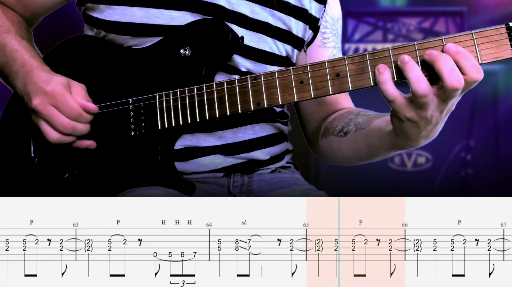
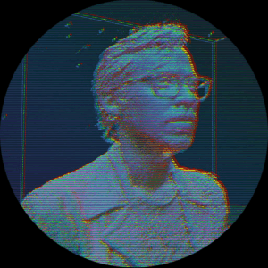
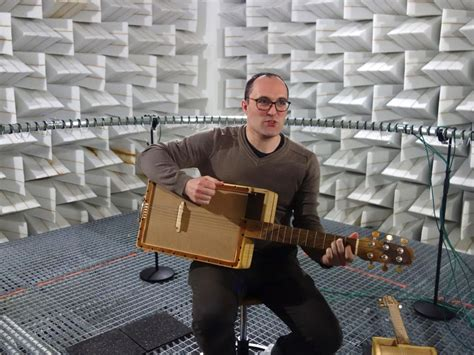
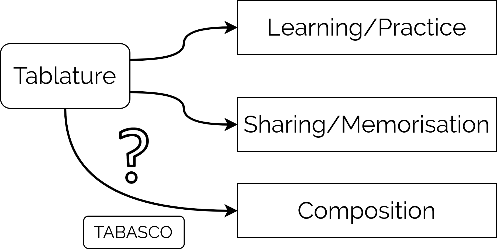
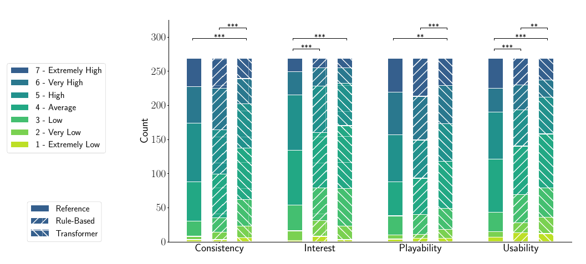
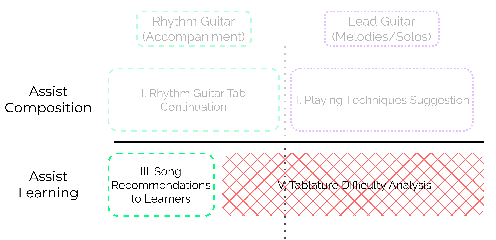

Assisting Western Popular Music Guitar Practice and Tablature Composition with Machine Learning
Alexandre D'Hooge - 25 Septembre 2025
Séminaire TAD
Context

Hot for Teacher by Van Halen.
Transcription and Performance: Mr. Tabs.
Transcription and Performance: Mr. Tabs.
Context

ANR TABASCO Project
-
Louis Bigo
-
Baptiste Bacot
-
Louis Couturier
-

Ken Déguernel -
Léo Dupouey
-
Mathieu Giraud
-

Benoît Navarret
“Assisting Western Popular Music Guitar Practice and Tablature Composition with Machine Learning”
Introduction
“Assisting Western Popular Music Guitar Practice and Tablature Composition with Machine Learning”


Assist Composition
Datasets
-
mysongbook.com
- Proprietary;
- Professional Transcriptions;
- 2115
.gpfiles; - 308 different artists.

- Open for Research;
- Amateur Transcriptions;
- 26 181
.gp5and tokenised files; - 882 different artists.
Cournut et al. (2021), What are the most used guitar
positions?, DLFM.
Régnier et al. (2021), Identification of Rhythm Guitar Sections in Symbolic Tablatures,
ISMIR.
Sarmento et al. (2021), DadaGP: A Dataset of Tokenized GuitarPro
Songs
for Sequence Models, ISMIR.
Assist Composition
Rule-Based Model


Transformer Model


Online Survey for Subjective Evaluation
54 participants, biased towards Male from Western Europe, but a good age distribution from 18 to
65+.

- Preference for the rule-based model despite being less controllable;
- Training efficiency confirmed for transformer model;
- Future models should include dedicated tokens for muted notes;
- Prolonged use of the transformer model might be more appropriate for its evaluation
Assist Composition
Bass Tablature Accompaniment Generation

Olivier Anoufa
Anoufa et al. (2025), Conditional Generation of Bass Guitar Tablature
for
Guitar Accompaniment in Western Popular Music, AIMC.

There are a lot of online resources available to guitarists:
- Tab Websites
- UltimateGuitar;
- Songsterr;
- 911tabs...
There are a lot of online resources available to guitarists:
- Tab Websites
- UltimateGuitar;
- Songsterr;
- 911tabs...
- Online Courses
- YouTube channels
- justinGuitar
- Synner
- Fender Play...
There are a lot of online resources available to guitarists:
- Tab Websites
- UltimateGuitar;
- Songsterr;
- 911tabs...
- Online Courses
- YouTube channels
- justinGuitar
- Synner
- Fender Play...
- Apps
- Yousician
- Simply Guitar
- Rocksmith+
Algorithm deployed in commercial application.
www.guitarsocialclub.com
www.guitarsocialclub.com
Recommendation code and data subset released under LGPL and ODBL Licenses.
gitlab.com/algomus.fr/guitor
gitlab.com/algomus.fr/guitor

A. Jeanneau studied the recommendation of learning paths to add temporal consistency.